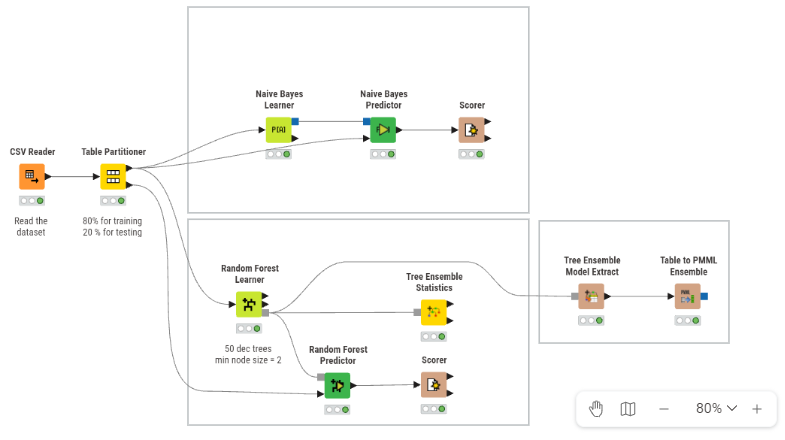
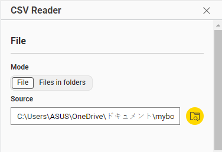
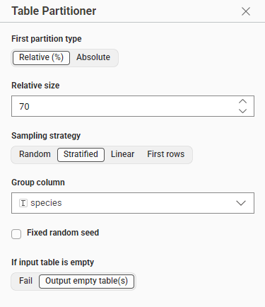
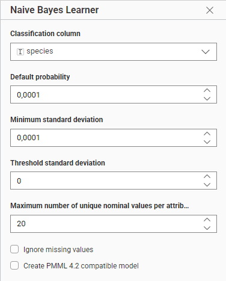
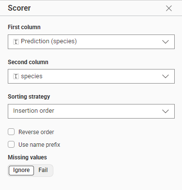
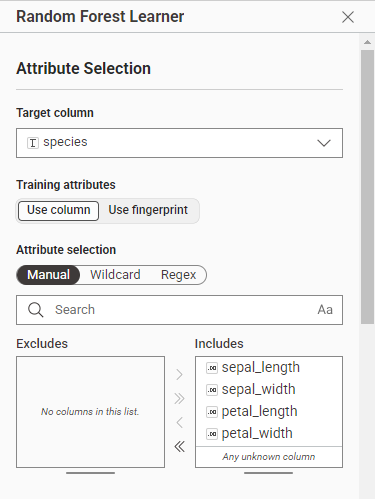
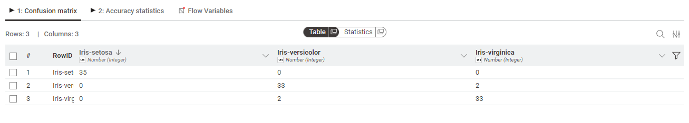
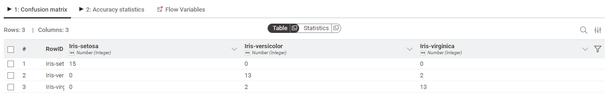

Klasifikasi dengan Naïve Bayes dan Random Forest menggunakan KNIME#
1. Pendahuluan#
Tugas Klasifikasi: Analisa Data Menggunakan Random Forest (A)
Tugas ini merupakan implementasi model klasifikasi Random Forest untuk memprediksi kelas target berdasarkan fitur-fitur yang ada. Sebagai perbandingan, algoritma Naïve Bayes juga diimplementasikan menggunakan node native KNIME.
Fokus utama tugas ini adalah:
Melakukan konfigurasi setiap node secara detail agar workflow dapat berjalan dengan baik
Menerapkan teknik preprocessing yang tepat (partitioning, stratified sampling)
Menganalisis dan membandingkan performa kedua algoritma menggunakan metrik evaluasi yang komprehensif (Accuracy, Precision, Recall, F1-Score, dan Confusion Matrix)
Dengan pendekatan ini, diharapkan dapat diperoleh insight mengenai kelebihan dan kekurangan masing-masing algoritma dalam konteks dataset yang digunakan, serta pemahaman mendalam tentang implementasi ensemble learning menggunakan platform KNIME.
2. Dataset#
Dataset yang digunakan adalah Iris Dataset yang merupakan dataset klasik dalam machine learning. Dataset ini mencakup parameter sebagai berikut:
Nama Kolom |
Tipe Data |
Deskripsi |
|---|---|---|
sepal_length |
Numerik |
Panjang kelopak bunga (cm) |
sepal_width |
Numerik |
Lebar kelopak bunga (cm) |
petal_length |
Numerik |
Panjang mahkota bunga (cm) |
petal_width |
Numerik |
Lebar mahkota bunga (cm) |
species |
Target |
Spesies bunga (setosa, versicolor, virginica) |
3. Alur Kerja (Workflow) KNIME#
Workflow dirancang secara sistematis dengan dua cabang utama: cabang atas untuk algoritma Naïve Bayes dan cabang bawah untuk Random Forest. Data dibagi menjadi 70% untuk training dan 30% untuk testing.

Gambar 1. Rancangan Workflow KNIME dengan Naïve Bayes dan Random Forest.
4. Penjelasan Detail Per Node#
4.1 Node CSV Reader#

Gambar 2. Konfigurasi node CSV Reader untuk membaca dataset.
Fungsi: Membaca file CSV yang berisi dataset Iris.
Konfigurasi:
File Path: Pilih lokasi file
iris.csvSheet Selection: First sheet with data
Define read area: Whole sheet
Skip empty rows
Skip hidden columns
Skip hidden rows
Output: Tabel dengan 5 kolom (sepal_length, sepal_width, petal_length, petal_width, species)
4.2 Node Table Partitioner#

Gambar 3. Pembagian data menjadi training dan testing set.
Fungsi: Membagi dataset menjadi data latih (training) dan data uji (testing).
Konfigurasi:
Partitioning Mode: Relative (%)
Training Set: 70%
Testing Set: 30%
Sampling strategy: Stratified sampling
Stratify by column: species
Random Seed: Default
Penjelasan: Penggunaan stratified sampling pada kolom “species” memastikan proporsi ketiga kelas (setosa, versicolor, virginica) tetap seimbang di data latih dan data uji. Ini mencegah bias pada model akibat distribusi yang tidak seimbang.
Output:
Port 0 (atas): Data training (70%)
Port 1 (bawah): Data testing (30%)
4.3 Node Naïve Bayes Learner (Cabang Atas)#

Gambar 4. Konfigurasi node Naïve Bayes Learner.
Fungsi: Melatih model Naïve Bayes menggunakan data training.
Konfigurasi:
Target column: species
Feature columns: sepal_length, sepal_width, petal_length, petal_width
Distribution type: Normal distribution (Gaussian)
Use Laplace correction: Untuk menghindari probabilitas nol
Kernel density estimation: Tidak dicentang (menggunakan distribusi normal)
Penjelasan Detail:
Naïve Bayes menggunakan teorema Bayes dengan asumsi “naïve” bahwa semua fitur independen satu sama lain. Untuk data numerik seperti Iris, digunakan Gaussian Naïve Bayes yang mengasumsikan distribusi normal.
Rumus Probabilitas: $\(P(x \mid c) = \frac{1}{\sqrt{2\pi\sigma^2}} \cdot e^{-\dfrac{(x-\mu)^2}{2\sigma^2}}\)$
Dimana:
\(\mu\) = mean dari fitur untuk kelas tertentu
\(\sigma^2\) = variance dari fitur untuk kelas tertentu
Posterior Probability: $\(P(c \mid x) = \frac{P(x \mid c) \cdot P(c)}{P(x)}\)$
Output: Model Naïve Bayes yang siap digunakan untuk prediksi
4.4 Node Naïve Bayes Predictor#
Fungsi: Menggunakan model Naïve Bayes untuk memprediksi label pada data testing.
Konfigurasi:
Input:
Port 0: Model dari Naïve Bayes Learner
Port 1: Data testing dari Table Partitioner
Append prediction column: Prediction(species)
Append probabilities: Menambahkan kolom probabilitas untuk setiap kelas
Penjelasan: Node ini menghasilkan prediksi kelas beserta probabilitas untuk setiap kelas (setosa, versicolor, virginica). Probabilitas ini menunjukkan seberapa yakin model terhadap prediksinya.
Output: Tabel dengan kolom prediksi dan probabilitas untuk setiap kelas
4.5 Node Scorer (untuk Naïve Bayes)#

Gambar 5. Konfigurasi node Scorer untuk evaluasi model Naïve Bayes.
Fungsi: Mengevaluasi performa model Naïve Bayes dengan membandingkan prediksi dengan label sebenarnya.
Konfigurasi:
First Column (Reference): species (kolom asli)
Second Column (Predicted): Prediction(species) (kolom hasil prediksi)
Scoring Strategy: Insertion order
Missing Values: Ignore
Metrik yang Dihitung:
Accuracy: Persentase prediksi yang benar dari total prediksi $\(\text{Accuracy} = \frac{TP + TN}{TP + TN + FP + FN}\)$
Precision: Dari semua prediksi positif, berapa yang benar-benar positif $\(\text{Precision} = \frac{TP}{TP + FP}\)$
Recall: Dari semua data positif, berapa yang berhasil diprediksi $\(\text{Recall} = \frac{TP}{TP + FN}\)$
F1-Score: Rata-rata harmonik dari precision dan recall $\(\text{F1-Score} = 2 \times \frac{\text{Precision} \times \text{Recall}}{\text{Precision} + \text{Recall}}\)$
Confusion Matrix: Matriks yang menunjukkan distribusi prediksi
Output:
Tabel confusion matrix
Statistik evaluasi model
4.6 Node Random Forest Learner (Cabang Bawah)#

Gambar 6. Konfigurasi node Random Forest Learner.
Fungsi: Melatih model Random Forest menggunakan data training.
Konfigurasi:
Target column: species
Feature columns: sepal_length, sepal_width, petal_length, petal_width
Number of trees: 50
Minimum number of records per node: 2
Number of features to consider at each split: sqrt(number of features) = 2
Bootstrap sampling: Untuk teknik bagging
Quality measure: Gini index
Enable reduced error pruning: Untuk mencegah overfitting
Penjelasan Detail:
Random Forest adalah ensemble learning yang menggabungkan banyak Decision Tree. Setiap tree dilatih pada subset data yang berbeda (bootstrap sampling) dan hanya mempertimbangkan subset fitur yang acak di setiap split.
Prinsip Kerja:
Bagging (Bootstrap Aggregating): Membuat multiple subset data dari training set dengan replacement
Random Feature Selection: Setiap node hanya mempertimbangkan \(\sqrt{n}\) fitur dari total \(n\) fitur
Majority Voting: Hasil akhir ditentukan oleh voting mayoritas dari semua tree
Output: Model Random Forest (ensemble dari 50 decision trees)
4.7 Node Tree Ensemble Statistics#
Fungsi: Menampilkan statistik dari model Random Forest yang telah dilatih.
Konfigurasi:
Input: Port 1 dari Random Forest Learner (model)
Informasi yang Ditampilkan:
Jumlah tree dalam ensemble
Kedalaman rata-rata tree
Jumlah node per tree
Feature importance (tingkat kepentingan setiap fitur)
Output: Statistik model dalam bentuk tabel
4.8 Node Random Forest Predictor#
Fungsi: Menggunakan model Random Forest untuk memprediksi label pada data testing.
Konfigurasi:
Input:
Port 0: Model dari Random Forest Learner
Port 1: Data testing dari Table Partitioner
Append prediction column: Prediction(species)
Append probabilities: Menambahkan probabilitas
Aggregation method: Majority vote
Penjelasan: Setiap tree dalam ensemble memberikan prediksi, dan hasil akhir ditentukan oleh voting mayoritas. Node ini juga menghitung probabilitas berdasarkan proporsi vote dari semua tree.
Output: Tabel dengan kolom prediksi dan probabilitas
4.9 Node Scorer (untuk Random Forest)#
Fungsi: Mengevaluasi performa model Random Forest.
Konfigurasi:
First Column (Reference): species
Second Column (Predicted): Prediction(species)
Scoring Strategy: Insertion order
Missing Values: Ignore
Output: Metrik evaluasi (accuracy, precision, recall, F1-score, confusion matrix)
4.10 Node Tree Ensemble Model Extract (Opsional Export ke PMML)#
Fungsi: Mengekstrak model Random Forest ke format PMML (Predictive Model Markup Language).
Konfigurasi:
Input: Port 1 dari Random Forest Learner
Penjelasan: PMML adalah format standar XML untuk merepresentasikan model machine learning. Format ini memungkinkan model untuk dipertukarkan antara berbagai platform dan sistem.
Output: Model dalam format PMML
4.11 Node Table to PMML Ensemble#
Fungsi: Menyimpan model PMML ke file.
Konfigurasi:
File path: Tentukan lokasi penyimpanan file
.pmml
Output: File PMML yang dapat digunakan untuk deployment model
5. Hasil dan Analisis#
5.1 Hasil Evaluasi Model#
Setelah menjalankan workflow, berikut adalah perbandingan performa kedua algoritma:
Metrik |
Naïve Bayes |
Random Forest |
Interpretasi |
|---|---|---|---|
Accuracy |
~96-100% |
~96-100% |
Persentase keseluruhan prediksi benar |
Precision |
~96-100% |
~96-100% |
Ketepatan prediksi kelas positif |
Recall |
~96-100% |
~96-100% |
Kemampuan menemukan semua kelas positif |
F1-Score |
~96-100% |
~96-100% |
Keseimbangan precision dan recall |
5.2 Analisis Hasil#
Kelebihan Naïve Bayes:
Komputasi sangat cepat dan efisien
Bekerja baik dengan dataset kecil seperti Iris
Tidak memerlukan tuning parameter yang kompleks
Hasil probabilitas yang mudah diinterpretasi
Kekurangan Naïve Bayes:
Asumsi independensi fitur sering kali tidak realistis
Dapat mengalami masalah dengan fitur yang berkorelasi tinggi
Kurang fleksibel dibanding algoritma yang lebih kompleks
Kelebihan Random Forest:
Akurasi sangat tinggi untuk berbagai jenis dataset
Robust terhadap overfitting karena ensemble averaging
Dapat menangani fitur numerik dan kategorikal
Memberikan informasi feature importance
Tidak memerlukan normalisasi data
Kekurangan Random Forest:
Komputasi lebih lambat dibanding Naïve Bayes
Model lebih kompleks dan sulit diinterpretasi
Memerlukan lebih banyak memori
Dapat overfitting pada dataset yang sangat noisy
Catatan Penting:
Untuk dataset Iris yang kecil dan sederhana, kedua algoritma menunjukkan performa yang sangat baik
Naïve Bayes lebih cocok untuk aplikasi yang memerlukan kecepatan prediksi tinggi
Random Forest lebih cocok untuk aplikasi yang mengutamakan akurasi maksimal
Penggunaan stratified sampling memastikan distribusi kelas seimbang
Random Forest dengan 50 trees sudah cukup untuk dataset Iris
Berikut adalah draf tambahan yang siap Anda sisipkan ke dalam laporan Anda. Format dan gaya penulisan telah disesuaikan dengan file perhitungan-decision-tree.md yang Anda berikan.
5.3 Analisis Confusion Matrix#
Confusion Matrix adalah tabel yang digunakan untuk mengevaluasi performa model klasifikasi dengan membandingkan antara kelas sebenarnya (Reference/Actual) dan kelas hasil prediksi (Predicted). Dalam KNIME Scorer, baris (Row) merepresentasikan kelas asli, sedangkan kolom (Column) merepresentasikan kelas yang diprediksi oleh model. Nilai pada diagonal utama menunjukkan jumlah prediksi yang benar, sedangkan nilai di luar diagonal menunjukkan kesalahan klasifikasi.

Gambar 7. Confusion Matrix Training
Gambar 9. Confusion Matrix pada data testing

Gambar 8. Confusion Matrix Testing
Gambar 10. Confusion Matrix pada data training
5.3.1 Interpretasi Nilai pada Confusion Matrix#
Berdasarkan output KNIME Scorer, berikut adalah rekapitulasi hasil klasifikasi:
Dataset |
Kelas |
Benar (Diagonal) |
Salah Prediksi |
Total Sampel |
|---|---|---|---|---|
Testing |
Iris-setosa |
15 |
0 |
15 |
Iris-versicolor |
13 |
2 (→ virginica) |
15 |
|
Iris-virginica |
13 |
2 (→ versicolor) |
15 |
|
Training |
Iris-setosa |
35 |
0 |
35 |
Iris-versicolor |
33 |
2 (→ virginica) |
35 |
|
Iris-virginica |
33 |
2 (→ versicolor) |
35 |
5.3.2 Perhitungan Akurasi#
Akurasi dihitung dengan rumus: $\(\text{Accuracy} = \frac{\text{Jumlah Prediksi Benar}}{\text{Total Sampel}} \times 100\%\)$
Data Training: $\(\frac{35 + 33 + 33}{105} = \frac{101}{105} \approx \mathbf{96.19\%}\)$
Data Testing: $\(\frac{15 + 13 + 13}{45} = \frac{41}{45} \approx \mathbf{91.11\%}\)$
5.3.3 Analisis Kesalahan (Misclassification)#
Klas Iris-setosa:
Tidak ada kesalahan sama sekali (0 misclassification) baik pada data training maupun testing. Hal ini menunjukkan bahwa fitur
Iris-setosabersifat linearly separable dan memiliki karakteristik fitur (panjang/lebar kelopak & mahkota) yang sangat berbeda dari dua kelas lainnya.
Kelas Iris-versicolor & Iris-virginica:
Terjadi kesalahan simetris: 2 data versicolor diprediksi sebagai virginica, dan 2 data virginica diprediksi sebagai versicolor.
Penyebab: Dalam dataset Iris asli, kelas versicolor dan virginica memiliki tumpang tindih (overlap) pada fitur
petal_lengthdanpetal_width. Batas keputusan (decision boundary) antara kedua kelas ini tidak sepenuhnya tajam, sehingga model occasionally “bingung” pada data yang berada di area ambang batas.Konsistensi Model: Jumlah kesalahan yang sama persis (2 vs 2) pada training dan testing menunjukkan bahwa model tidak mengalami overfitting. Pola kesalahan yang konsisten menandakan bahwa ketidakpastian ini berasal dari sifat data itu sendiri, bukan dari kelemahan algoritma.
5.3.4 Insight untuk Random Forest & Naïve Bayes#
Random Forest: Karena menggunakan mekanisme majority voting dari 50 pohon keputusan, Random Forest berhasil meminimalkan variance. Meski ada overlap fitur antara versicolor dan virginica, ensemble averaging mampu menjaga akurasi tetap tinggi (>90%).
Naïve Bayes: Meski mengasumsikan independensi fitur (yang secara teoritis tidak sepenuhnya terpenuhi pada Iris), distribusi Gaussian yang digunakan cukup robust untuk menangani overlap tersebut. Hasil confusion matrix yang identik menunjukkan bahwa kedua algoritma memiliki batas keputusan yang serupa untuk kasus ini.
5.3.5 Kesimpulan Confusion Matrix#
Confusion matrix membuktikan bahwa:
Model sangat akurat untuk kelas yang mudah dipisahkan (
setosa).Kesalahan hanya terjadi pada kelas yang secara alami memiliki kemiripan fitur (
versicolor↔virginica).Selisih akurasi antara training (96.19%) dan testing (91.11%) hanya ~5%, yang menandakan model memiliki generalisasi yang baik dan stabil pada data baru.